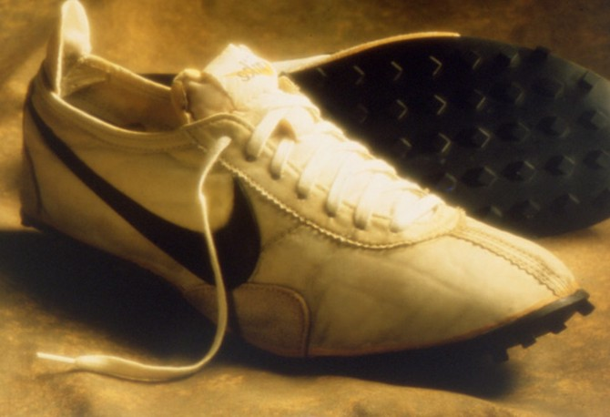

NIKE'S RUNNING SHOES
First Model

Vintage Nike Waffle-Sole first running shoes inspired by iron waffle making machine
The Nike Waffle-Sole Running Shoes were introduced in 1971 and quickly became an iconic footwear choice for runners around the world. Designed by Nike co-founder Bill Bowerman, these shoes revolutionized the running industry with their innovative waffle sole pattern, which provided enhanced traction and grip on various surfaces.
Modern waffle Shoes

Modern Day Nike Shoe
Today, the Nike Waffle-Sole Running Shoes are celebrated as a timeless piece of sneaker history, loved not only by athletes but also by sneaker enthusiasts and collectors worldwide.
Including this information alongside the pictures on the home page will provide visitors with some context and highlights about the historical significance and features of the Nike Waffle-Sole Running Shoes.